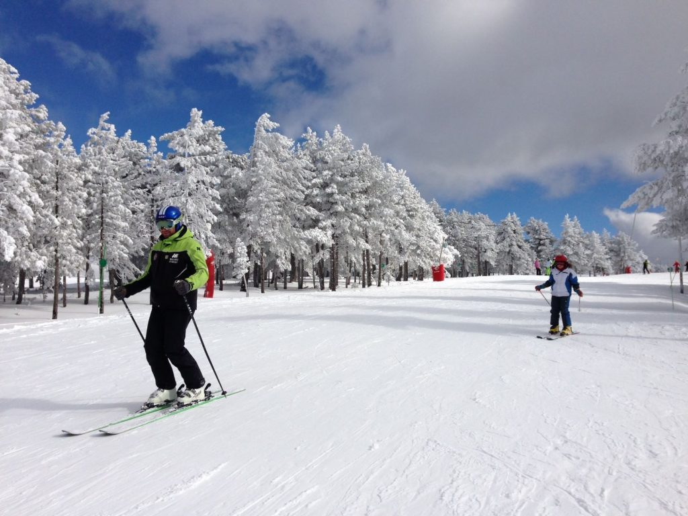

Estación de Esquí de Valdelinares
La estación de esquí Valdelinares , en la Sierra de Gúdar-Javalambre, ofrece 17 km de pistas para todos los niveles. Con 14 pistas en total, 6 de ellas para principiantes, 4 intermedias y 4 avanzadas, es ideal para aquellos que buscan aprender o mejorar en el esquí. Además, cuenta con un snowpark y un jardín de nieve para niños.
Los servicios de la estación incluyen alquiler de material, escuelas de esquí y snowboard, y una zona de restauración con cafeterías. Para las familias, tiene una pista dedicada a los más pequeños, la pista Skity, que les permite aprender de manera divertida y segura. Su proximidad a la Comunidad Valenciana la convierte en un destino popular.
La estación, situada a 2.024 metros, cuenta con un sistema de nieve artificial que asegura excelentes condiciones durante toda la temporada. Su ubicación permite vistas espectaculares y un fácil acceso a las pistas, comenzando a disfrutar de la nieve desde que llegas.
Con 12 remontes, incluyendo telesillas y telesquís, Valdelinares ofrece una experiencia de esquí cómoda y relajada. Es una opción perfecta para aquellos que buscan disfrutar de un ambiente tranquilo y familiar.
